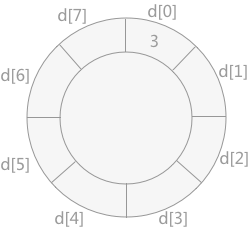
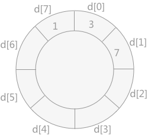
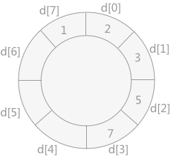
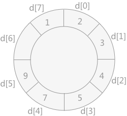
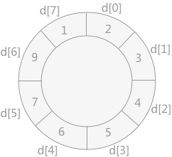

2路插入排序算法详解
2-路插入排序算法是在折半插入排序的基础上对其进行改进，减少其在排序过程中移动记录的次数从而提高效率。
具体实现思路为：另外设置一个同存储记录的数组大小相同的数组 d，将无序表中第一个记录添加进 d[0] 的位置上，然后从无序表中第二个记录开始，同 d[0] 作比较：如果该值比 d[0] 大，则添加到其右侧；反之添加到其左侧。
2-路插入排序算法的具体实现代码为：
具体实现思路为：另外设置一个同存储记录的数组大小相同的数组 d，将无序表中第一个记录添加进 d[0] 的位置上，然后从无序表中第二个记录开始，同 d[0] 作比较：如果该值比 d[0] 大，则添加到其右侧；反之添加到其左侧。
在这里的数组 d 可以理解成一个环状数组。
使用 2-路插入排序算法对无序表{3,1,7,5,2,4,9,6}排序的过程如下：
-
将记录 3 添加到数组 d 中：

-
然后将 1 插入到数组 d 中，如下图所示：

-
将记录 7 插入到数组 d 中，如下图所示：

-
将记录 5 插入到数组 d 中，由于其比 7小，但是比 3 大，所以需要移动 7 的位置，然后将 5 插入，如下图所示：
-
将记录 2 插入到数组 d 中，由于比 1大，比 3 小，所以需要移动 3、7、5 的位置，然后将 2 插入，如下图所示：

-
将记录 4 插入到数组 d 中，需要移动 5 和 7 的位置，如下图所示：
-
将记录 9 插入到数组 d 中，如下图所示：

-
将记录 6 插入到数组 d 中，如下图所示：

2-路插入排序算法的具体实现代码为：
#include <stdio.h>
#include <stdlib.h>
void insert(int arr[], int temp[], int n)
{
int i,first,final,k;
first = final = 0;//分别记录temp数组中最大值和最小值的位置
temp[0] = arr[0];
for (i = 1; i < n; i ++){
// 待插入元素比最小的元素小
if (arr[i] < temp[first]){
first = (first - 1 + n) % n;
temp[first] = arr[i];
}
// 待插入元素比最大元素大
else if (arr[i] > temp[final]){
final = (final + 1 + n) % n;
temp[final] = arr[i];
}
// 插入元素比最小大，比最大小
else {
k = (final + 1 + n) % n;
//当插入值比当前值小时，需要移动当前值的位置
while (temp[((k - 1) + n) % n] > arr[i]) {
temp[(k + n) % n] =temp[(k - 1 + n) % n];
k = (k - 1 + n) % n;
}
//插入该值
temp[(k + n) % n] = arr[i];
//因为最大值的位置改变，所以需要实时更新final的位置
final = (final + 1 + n) % n;
}
}
// 将排序记录复制到原来的顺序表里
for (k = 0; k < n; k ++) {
arr[k] = temp[(first + k) % n];
}
}
int main()
{
int a[8] = {3,1,7,5,2,4,9,6};
int temp[8];
insert(a,temp,8);
for (int i = 0; i < 8; i ++){
printf("%d ", a[i]);
}
return 0;
}
运行结果为：
1 2 3 4 5 6 7 9
2-路插入排序相比于折半插入排序，只是减少了移动记录的次数，没有根本上避免，所以其时间复杂度仍为O(n2)。关注公众号「站长严长生」，在手机上阅读所有教程，随时随地都能学习。内含一款搜索神器，免费下载全网书籍和视频。

微信扫码关注公众号